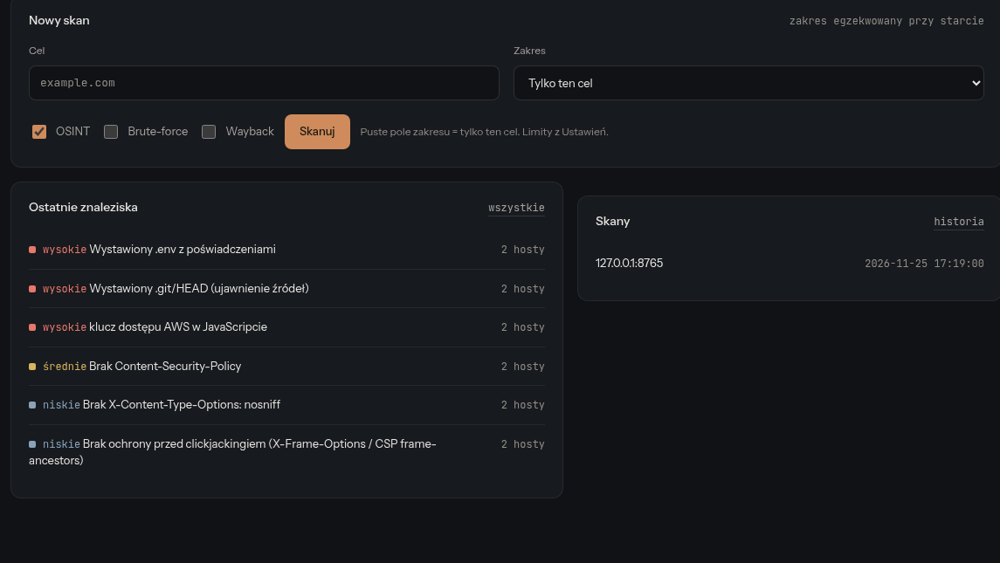
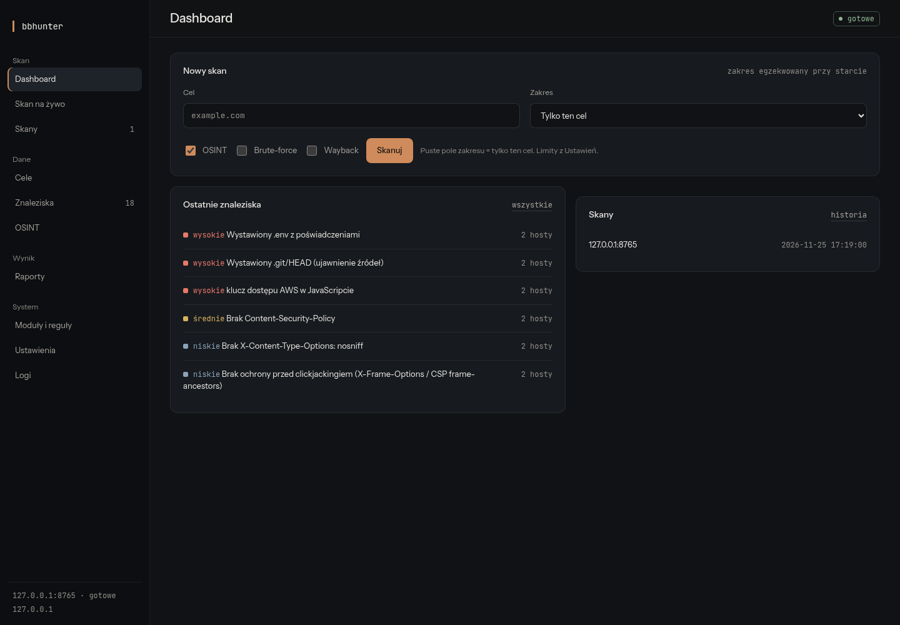
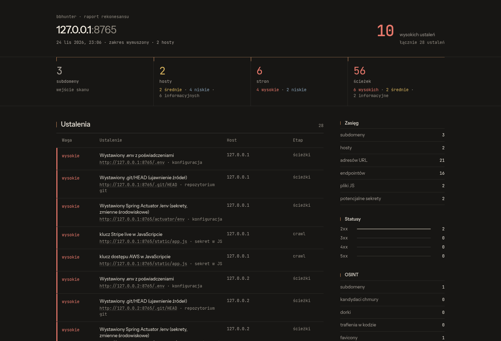

rekonesans dla bug bounty · Rust
Od domeny do raportu, jednym przebiegiem
bbhunter zbiera subdomeny z certyfikatów, DNS i archiwów, sonduje hosty, przeszukuje JS i sprawdza well-known ścieżki. Wynik to jeden raport: ustalenia po wadze, hosty, endpointy i leady — w terminalu albo w przeglądarce.
Jeden plik binarny · serwer tylko na 127.0.0.1 · raport offline
$ bbhunter recon -u 127.0.0.1:8765 --osint [+] OSINT: 1 subdomen, 0 kandydatów chmury [*] runda 1: 2 hostów (rekurencja: tak) [+] gotowe: 2 hostów, 28 ustaleń report: ./bbhunter-out/127.0.0.1/report.html

Prawdziwy przebieg na lokalnym fixturze testowym. Liczby zależą od celu.
Jak działa
Cztery etapy w jednej komendzie, poprzedzone OSINT-em. Każdy etap zapisuje swoje artefakty, więc możesz przerwać w połowie i pracować na tym, co już masz.
-
01
Subdomeny
crt.sh, hackertarget, OTX i urlscan, plus opcjonalny brute-force. Wildcard DNS jest wykrywany, żeby nie zalać listy fałszywkami.
-
02
Probe
HTTPS ze zejściem do HTTP, status, tytuł, technologie, IP i CNAME. Do tego audyt nagłówków, ciasteczek i CORS.
-
03
Crawl
BFS w obrębie hosta, formularze i bundle JS. Nowe hosty z linków i kodu wchodzą do kolejnej rundy i przechodzą te same etapy.
-
04
Ścieżki
Stała lista well-known ścieżek:
.git,.env, actuator, swagger, GraphQL. Treść odpowiedzi jest walidowana, więc soft-404 nie robi fałszywek.
Ta sama moc, bez terminala
bbhunter serve stawia serwer na 127.0.0.1: dashboard, cele, skany, znaleziska i OSINT w jednym miejscu. Dziennik i etapy na żywo, a każdy skan zostawia raport i dane do triage. Bez chmury, bez konta, bez wysyłania danych poza twoją maszynę.

- Zakres przy każdym skanieAllowlista z formularza jest egzekwowana tak samo jak flaga --scope. Puste pole oznacza tylko ten cel.
- Jeden skan narazDrugi request dostaje 409, więc logi i pliki dwóch przebiegów się nie mieszają.
- OSINT w cenieCheckbox dorzuca RDAP, ASN, archiwa i chmurę; wynik leci do JSON-a obok raportu.
Raport, nie stos plików
Jeden plik HTML, który otwiera się bez internetu. Obok niego JSON, JSONL i pliki z leadami, jeśli wolisz pracować w terminalu.

- Waga na brzegu wiersza Ustalenia sortowane od najwyższych. Każdy wiersz ma 3 px brzeg i słowną wagę, więc kolor nie jest jedynym nośnikiem znaczenia.
- Ślad pokrycia Cztery stacje pokazują, co uruchomiono i ile z tego wyszło — zanim przewiniesz do pierwszej tabeli.
- Leady, nie wyroki Adresy z parametrami, panele admina i endpointy API trafiają do osobnych plików. To wejście do Burpa, nie potwierdzona podatność.
To, czego nie widać w HTML-u
OSINT jest domyślnie częścią każdego skanu: nowe subdomeny od razu wchodzą do pierwszej rundy. Osobno możesz uruchomić bbhunter osint.
Bez kluczy
- Archiwa — Common Crawl i Wayback: stare endpointy i parametry
- RDAP — rejestrator, daty, nameservery
- ASN i prefiksy — RIPE Stat, z fallbackiem hackertarget
- Shodan InternetDB — porty, hosty i podatności bez klucza
- Chmura — S3, GCS i Azure po permutacjach nazwy, tylko HEAD
- Favicony — hash mmh3 i grupowanie hostów po ikonie
- Dorki — gotowe linki do Google, GitHuba, GitLaba, Shodana i Censysa
Z kluczami w env
- SecurityTrails — subdomeny,
SECURITYTRAILS_API_KEY - VirusTotal — subdomeny,
VT_API_KEY - Shodan DNS i favicony —
SHODAN_API_KEY - GitHub code search —
GITHUB_TOKEN
Brak klucza nie przerywa przebiegu: źródło jest pomijane, a powód trafia do „Uwag”.
Nazwy bucketów to kandydaci, nie potwierdzone zasoby. 403 znaczy „nazwa istnieje”, 200 — publiczna lista. Narzędzie pobiera tylko nagłówki, nie zawartość, i nie twierdzi, że bucket należy do celu. Weryfikacja własności zostaje po twojej stronie.
Zakres pod kontrolą
Narzędzie do rekonesansu ma jedno ryzyko: za dużo ruchu w złym miejscu. Trzy mechanizmy trzymają to w ryzach.
Allowlista jest bramką
Każdy request przechodzi przez plik scope. Bez niego narzędzie odmawia startu, a hosty spoza listy są odrzucane przed wysłaniem.
Tempo pod kontrolą
Globalny limit req/s, cap współbieżności, timeouty i twarde limity rozmiaru odpowiedzi. Domyślnie 25 req/s, nie „jak najszybciej”.
Tylko odczyt
Jedno GET na well-known ścieżkę. Zero payloadów, zero fuzzowania, zero mutacji. Wynik to tropy do potwierdzenia, nie zgłoszenia.
Instalacja
Stabilny Rust, testowane na 1.94. Reszta to jedna komenda i plik z zakresem.
# zbuduj i zainstaluj binarkę cargo build --release cargo install --path . # wskaż zakres i uruchom pełny przebieg (OSINT jest domyślnie włączony) bbhunter recon -d example.com --scope scope.txt --brute --wayback # albo w przeglądarce bbhunter serve --port 8080
Plik scope.txt ma jedną regułę na linię: example.com obejmuje też subdomeny, a *.example.org to glob. Wzór jest w scope.example.txt.